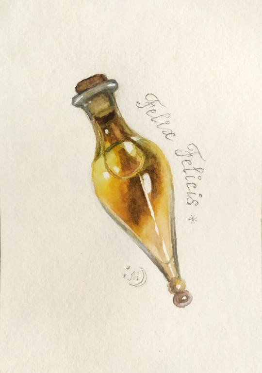

Felix Felicis "Liquid Luck"

Ingredients
- Ashwinder egg
- Squill bulb
- Murtlap tentacle
- Tincture of thyme
- Occamy eggshell
- Powdered common rue
Recipe
- Add Ashwinder egg to a cauldron, then add horseradish and heat.
- Juice a squill bulb, add to the cauldron and stir vigourously.
- Chop up an anemone-like growth on the back of Murtlap, then add to mixture and heat.
- Add a dash of tincture of thyme and stir slowly.
- Grind up Occamy shell and add to mixture.
- Stir slowly then add heat to the cauldron.
- Add a sprinkle of powdered common rue.
- Stir vigorously then heat the cauldron one last time.
- Wave wand over potion in a figure of eight (8) and say "Felixempra!"